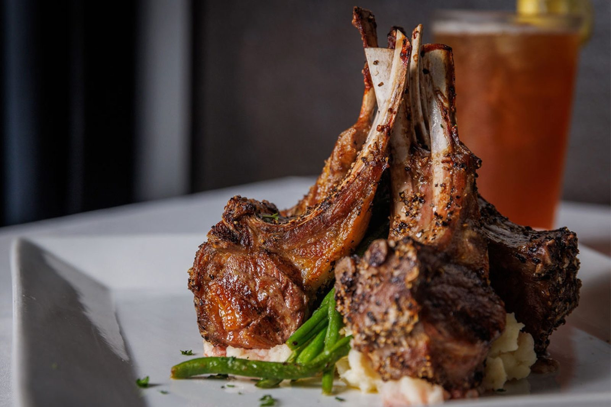

Steaks
Certified Angus Beef seasoned with kosher salt, black pepper and butter, served with haricot verts and mashed potatoes.
Chophouse · Downtown Bastrop, TX

703 Chestnut St, Bastrop, TX 78602
Steaks, seafood and cocktails in a brick-walled historic dining room with a piano bar.
What to order
Steaks, starters and drinks at Piney Creek.
Certified Angus Beef seasoned with kosher salt, black pepper and butter, served with haricot verts and mashed potatoes.

Crab cakes, bacon wrapped scallops and lobster bisque, plus lamb chop and creamed spinach stuffed mushroom starters.

Mojitos and martinis at the bar, plus a happy hour.


4.4 ★ · 527 Google reviews
The food here was amazing. Order the Filet! The service was top tier and Debbie was great with our kids and great conversation!! Make sure you have room for dessert as the creme brûlée was amazing as well! 10/10 recommend this place! Well worth it if you want a good meal!
My favorite place for happy hour or to celebrate an occasion! They make the best drinks 🍸🍷🥂🍾, their food is always impeccable and the staff are wonderful. There are restaurants in town but Piney Creek still steals the show with the best ambience and service. Love my girls night out here or just dinner with the Hubsy ❤️
For exceptional service, food and atmosphere visit the independently owned Piney Creek Restaurant at Historic Downtown Bastrop. Known for its delicious steaks and cocktails, this is the perfect place to catch up with friends or to celebrate life’s special occassions. And the happy hour is the best in Bastrop!

Our story
Brick walls, an intimate bar, a piano bar and a dining room set with candles and flowers. The entrance is easy to walk past at night.
Birthdays, anniversaries, girls' nights and work dinners. We also host private parties and events, including Saturday and Sunday mornings.
Visit
703 Chestnut St, Bastrop, TX 78602
Look for the hanging sign on the brick building. Reservations recommended.